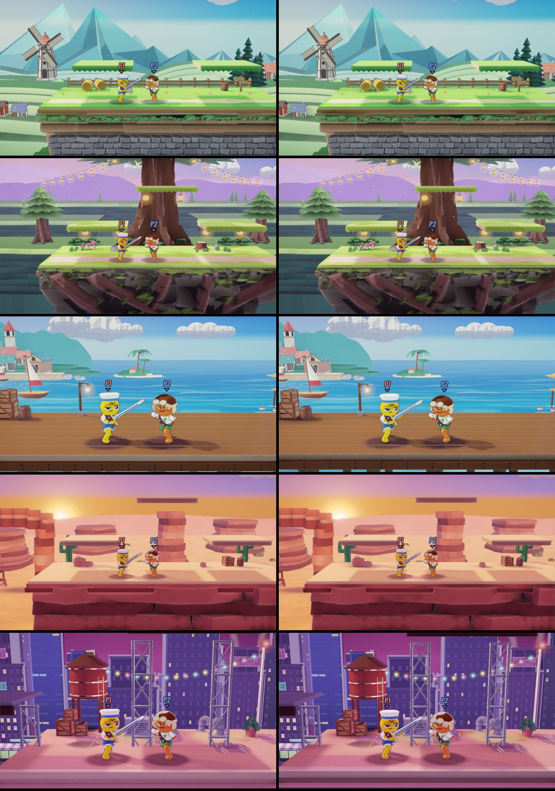

The paper target: a paint-over per stage
Each stage's match camera painted toward the paper look, as a target in our own style for the next passes. The fighters are left as they are. Choose a stage, then compare Today with the Paint-over, or look at one move alone; press 1 to 8 to switch in place. Tell me which moves become the target; each one says how the game would do it.
| Move | What it paints | In the game | My pick |
|---|---|---|---|
| Sheet shadows | Each nearer sheet's soft shadow on the one behind it, cast away from the light | Baked shadow cards in Blender, or a depth shadow on the scenery | Yes, every stage |
| Cut edges | A pale die-cut edge on each near layer's outline | A depth-edge rim on the scenery (the paper finish's cut edge by depth) | Yes, every stage |
| Crevices | Shade where a surface sits deeper than its surroundings, near the fight | Idea 3's contact shade, deeper | Small; optional |
| Light | Warm from the light's side, cool away from it, a lift round the fight | Palette and grading per stage | Yes: the lift round the fight |
| Air | The distance toward the air colour, lower in contrast | The depth curve pushed further | Yes: meadow and beach |
| Grain | A faint paper fibre, none in the sky | The paper finish's grain a step up | Optional |
Idea 3, built: contact shade on every stage
Each stage's Blender pieces (front, play area, background) are now shaded where the rest of the stage meets them: under props on the play areas, under each play area's lip on the front, the deck's and the roof's front edges, round the background's cottages. It ships inside the models, at no run-time cost. Before left, after right; meadow, grove and canyon at the match camera, beach and city with the fighters in play:

Measured on every stage: the play area a step lighter (0.03 to 0.05), the distance lighter and softer, the near layers' edges and shadows sharper. Details in docs/art/stages/PAINTOVERS.md.